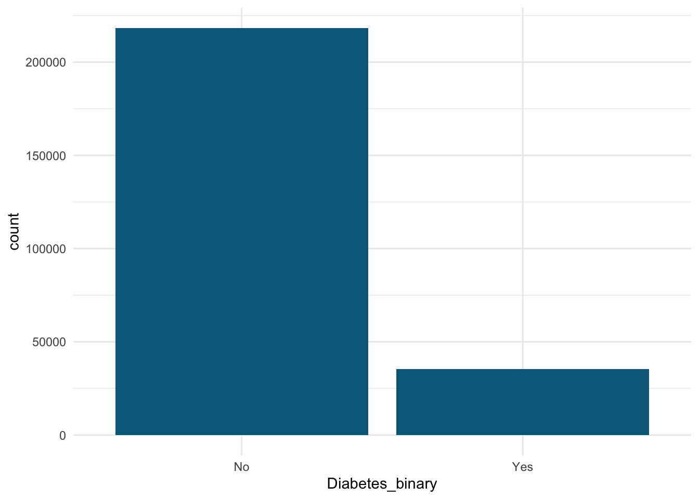
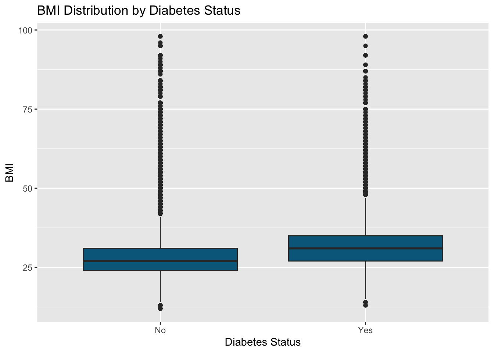
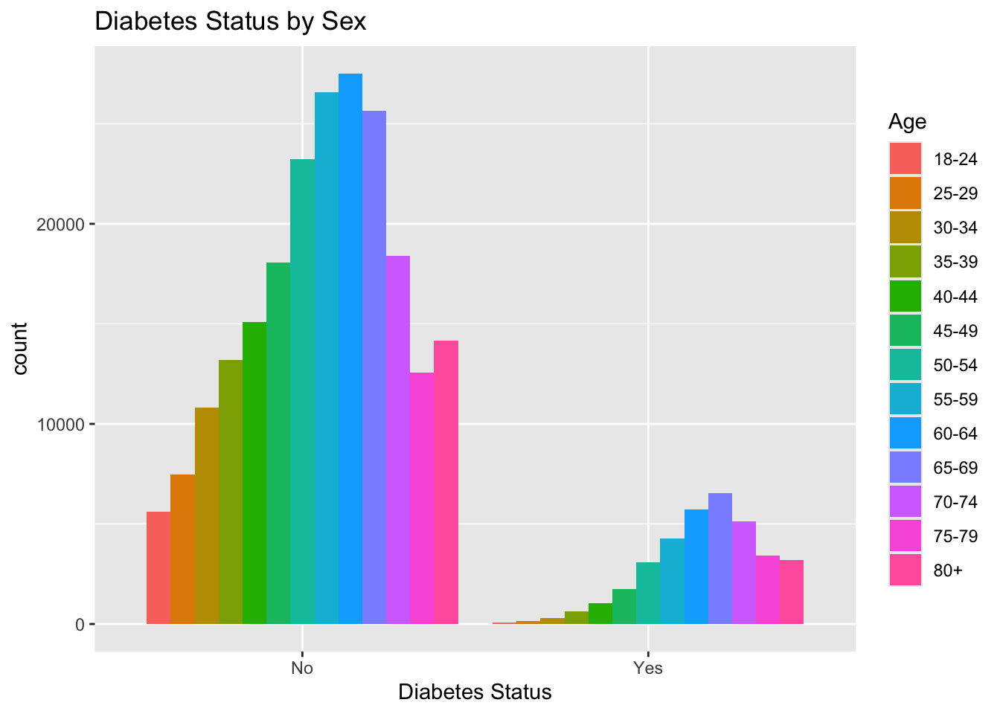
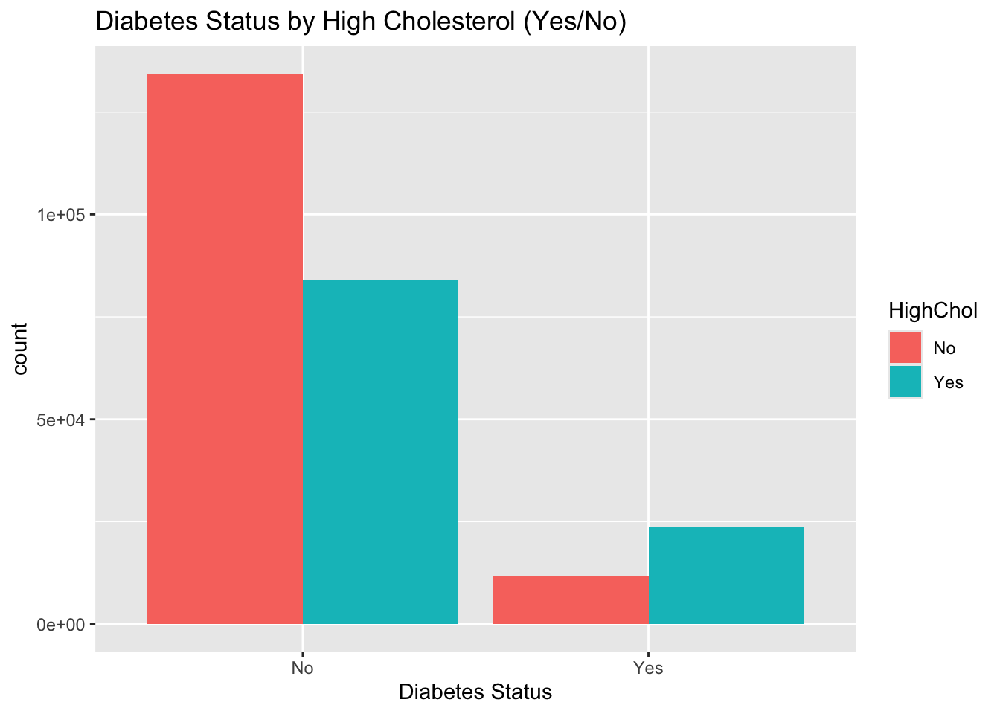

library(tidyverse)
library(ggplot2)Exploratory Data Analysis
Introduction
The data used in this project comes from the 2015 Behavioral Risk Factor Surveillance System report conducted by the CDC. View the data set on Kaggle.
The data set contains 22 variables. The variable ‘Diabetes_binary’ (diabetes or no diabetes) will be used as the response variable for modeling. This leaves 21 variables as potential predictors, which include information like whether or not the subject has high blood pressure, BMI, age, general health rating (self-assessed), and more. The cleaned data set from Kaggle contains 253,680 survey responses.
We will first explore the data and investigate the relationships between variables to get a sense of what variables could be useful for modeling. Then, we will build two models to predict the Diabetes_binary variable using a selection of the 21 predictor variables. We will be building a classification tree and a random forest model and evaluating the predictions from each to determine the best model.
Data Preparation
Import libraries
Read in data
df <- read_csv("data/diabetes_binary_health_indicators_BRFSS2015.csv")Rows: 253680 Columns: 22
── Column specification ────────────────────────────────────────────────────────
Delimiter: ","
dbl (22): Diabetes_binary, HighBP, HighChol, CholCheck, BMI, Smoker, Stroke,...
ℹ Use `spec()` to retrieve the full column specification for this data.
ℹ Specify the column types or set `show_col_types = FALSE` to quiet this message.# view first few rows of data
head(df)# A tibble: 6 × 22
Diabetes_binary HighBP HighChol CholCheck BMI Smoker Stroke
<dbl> <dbl> <dbl> <dbl> <dbl> <dbl> <dbl>
1 0 1 1 1 40 1 0
2 0 0 0 0 25 1 0
3 0 1 1 1 28 0 0
4 0 1 0 1 27 0 0
5 0 1 1 1 24 0 0
6 0 1 1 1 25 1 0
# ℹ 15 more variables: HeartDiseaseorAttack <dbl>, PhysActivity <dbl>,
# Fruits <dbl>, Veggies <dbl>, HvyAlcoholConsump <dbl>, AnyHealthcare <dbl>,
# NoDocbcCost <dbl>, GenHlth <dbl>, MentHlth <dbl>, PhysHlth <dbl>,
# DiffWalk <dbl>, Sex <dbl>, Age <dbl>, Education <dbl>, Income <dbl>Check for missing values
No missing values in any column
sum_na <- function(column){
sum(is.na(column))
}
df |> summarize(across(everything(), sum_na))# A tibble: 1 × 22
Diabetes_binary HighBP HighChol CholCheck BMI Smoker Stroke
<int> <int> <int> <int> <int> <int> <int>
1 0 0 0 0 0 0 0
# ℹ 15 more variables: HeartDiseaseorAttack <int>, PhysActivity <int>,
# Fruits <int>, Veggies <int>, HvyAlcoholConsump <int>, AnyHealthcare <int>,
# NoDocbcCost <int>, GenHlth <int>, MentHlth <int>, PhysHlth <int>,
# DiffWalk <int>, Sex <int>, Age <int>, Education <int>, Income <int>View column types
All of the variables are numeric, but most of them are categorical variables encoded as numbers, so we will need to change those
sapply(df, class) Diabetes_binary HighBP HighChol
"numeric" "numeric" "numeric"
CholCheck BMI Smoker
"numeric" "numeric" "numeric"
Stroke HeartDiseaseorAttack PhysActivity
"numeric" "numeric" "numeric"
Fruits Veggies HvyAlcoholConsump
"numeric" "numeric" "numeric"
AnyHealthcare NoDocbcCost GenHlth
"numeric" "numeric" "numeric"
MentHlth PhysHlth DiffWalk
"numeric" "numeric" "numeric"
Sex Age Education
"numeric" "numeric" "numeric"
Income
"numeric" Look at unique values of each variable to see which ones should be converted into factors
sapply(df, table)$Diabetes_binary
0 1
218334 35346
$HighBP
0 1
144851 108829
$HighChol
0 1
146089 107591
$CholCheck
0 1
9470 244210
$BMI
12 13 14 15 16 17 18 19 20 21 22 23 24
6 21 41 132 348 776 1803 3968 6327 9855 13643 15610 19550
25 26 27 28 29 30 31 32 33 34 35 36 37
17146 20562 24606 16545 14890 14573 12275 10474 8948 7181 5575 4633 4147
38 39 40 41 42 43 44 45 46 47 48 49 50
3397 2911 2258 1659 1639 1500 1043 819 750 622 484 416 372
51 52 53 54 55 56 57 58 59 60 61 62 63
253 215 237 113 169 109 86 71 54 63 35 43 34
64 65 66 67 68 69 70 71 72 73 74 75 76
24 19 13 15 14 9 15 49 14 47 16 52 3
77 78 79 80 81 82 83 84 85 86 87 88 89
55 1 66 2 49 37 2 44 1 1 61 2 28
90 91 92 95 96 98
1 1 32 12 1 7
$Smoker
0 1
141257 112423
$Stroke
0 1
243388 10292
$HeartDiseaseorAttack
0 1
229787 23893
$PhysActivity
0 1
61760 191920
$Fruits
0 1
92782 160898
$Veggies
0 1
47839 205841
$HvyAlcoholConsump
0 1
239424 14256
$AnyHealthcare
0 1
12417 241263
$NoDocbcCost
0 1
232326 21354
$GenHlth
1 2 3 4 5
45299 89084 75646 31570 12081
$MentHlth
0 1 2 3 4 5 6 7 8 9 10
175680 8538 13054 7381 3789 9030 988 3100 639 91 6373
11 12 13 14 15 16 17 18 19 20 21
41 398 41 1167 5505 88 54 97 16 3364 227
22 23 24 25 26 27 28 29 30
63 38 33 1188 45 79 327 158 12088
$PhysHlth
0 1 2 3 4 5 6 7 8 9 10
160052 11388 14764 8495 4542 7622 1330 4538 809 179 5595
11 12 13 14 15 16 17 18 19 20 21
60 578 68 2587 4916 112 96 152 22 3273 663
22 23 24 25 26 27 28 29 30
70 56 72 1336 69 99 522 215 19400
$DiffWalk
0 1
211005 42675
$Sex
0 1
141974 111706
$Age
1 2 3 4 5 6 7 8 9 10 11 12 13
5700 7598 11123 13823 16157 19819 26314 30832 33244 32194 23533 15980 17363
$Education
1 2 3 4 5 6
174 4043 9478 62750 69910 107325
$Income
1 2 3 4 5 6 7 8
9811 11783 15994 20135 25883 36470 43219 90385 Convert columns to factors where appropriate
# specify columns to skip
skip_convert <- c('BMI', 'MentHlth', 'PhysHlth')
# convert all other columns to factors
df <- df |>
mutate(across(-all_of(skip_convert), as.factor))Recode factor levels for better interpretability
First recode all variables that have levels of Yes/No
# skip variables that are not factors or do not have levels of yes/no
skip_recode <- c('BMI', 'GenHlth', 'MentHlth', 'PhysHlth',
'Sex', 'Age', 'Education', 'Income')
lvl_map <- c("0" = "No", "1" = "Yes")
df <- df |>
mutate(across(-all_of(skip_recode), ~ recode(.x, !!!lvl_map)))Recode remaining variables
df <- df |>
mutate(
GenHlth = fct_recode(
GenHlth,
'Excellent' = '1',
'Very Good' = '2',
'Good' = '3',
'Fair' = '4',
'Poor' = '5'
),
Sex = fct_recode(
Sex,
'Female' = '0',
'Male' = '1'
),
Age = fct_recode(
Age,
'18-24' = '1',
'25-29' = '2',
'30-34' = '3',
'35-39' = '4',
'40-44' = '5',
'45-49' = '6',
'50-54' = '7',
'55-59' = '8',
'60-64' = '9',
'65-69' = '10',
'70-74' = '11',
'75-79' = '12',
'80+' = '13'
),
Education = fct_recode(
Education,
'None' = '1',
'Elementary School' = '2',
'Some High School' = '3',
'High School' = '4',
'Some College' = '5',
'College Graduate' = '6',
),
Income = fct_recode(
Income,
"Less than $10k" = "1",
"$10k to < $15k" = "2",
"$15k to < $20k" = "3",
"$20k to < $25k" = "4",
"$25k to < $35k" = "5",
"$35k to < $50k" = "6",
"$50k to < $75k" = "7",
"$75k or more" = "8"
),
)Data Exploration
Now we will look at some graphical and numerical summaries.
Number of participants without diabetes vs with diabetes
The data is very imbalanced, most participants do not have diabetes.
ggplot(df, aes(x = Diabetes_binary)) +
geom_bar(fill = 'deepskyblue4') +
theme_minimal()
Two-way contingency tables for Diabetes Status by all other categorical variables
We want to identify a subset of variables that may be useful predictors for Diabetes_binary, and comparing diabetes prevalence across the levels of each variable can give us an initial idea.
We can expect to that the proportions for participants without diabetes will be higher overall since there is a much larger number of those participants overall.
A pattern that sticks out is that the proportion of participants with diabetes increase with age until ages 75+, when the proportion decreases.
Another pattern is that participants without diabetes have higher proportions for exercising, having health care coverage, eating fruits and veggies, no heart issues, and no heavy alcohol consumption. Some of these may be helpful predictor variables for modeling.
cat_vars <- names(df)[sapply(df, is.factor)]
# remove Diabetes_binary from the list so we don't two way table with itself
cat_vars <- setdiff(cat_vars, "Diabetes_binary")
for (v in cat_vars) {
cat("\n")
cat("Diabetes_binary by", v, "\n")
print(round(prop.table(table(df$Diabetes_binary, df[[v]])), 3))
}
Diabetes_binary by HighBP
No Yes
No 0.537 0.324
Yes 0.034 0.105
Diabetes_binary by HighChol
No Yes
No 0.530 0.331
Yes 0.046 0.093
Diabetes_binary by CholCheck
No Yes
No 0.036 0.824
Yes 0.001 0.138
Diabetes_binary by Smoker
No Yes
No 0.490 0.371
Yes 0.067 0.072
Diabetes_binary by Stroke
No Yes
No 0.833 0.028
Yes 0.126 0.013
Diabetes_binary by HeartDiseaseorAttack
No Yes
No 0.798 0.063
Yes 0.108 0.031
Diabetes_binary by PhysActivity
No Yes
No 0.192 0.669
Yes 0.051 0.088
Diabetes_binary by Fruits
No Yes
No 0.308 0.553
Yes 0.058 0.082
Diabetes_binary by Veggies
No Yes
No 0.155 0.706
Yes 0.034 0.105
Diabetes_binary by HvyAlcoholConsump
No Yes
No 0.808 0.053
Yes 0.136 0.003
Diabetes_binary by AnyHealthcare
No Yes
No 0.043 0.817
Yes 0.006 0.134
Diabetes_binary by NoDocbcCost
No Yes
No 0.791 0.069
Yes 0.125 0.015
Diabetes_binary by GenHlth
Excellent Very Good Good Fair Poor
No 0.174 0.326 0.245 0.086 0.030
Yes 0.004 0.025 0.053 0.039 0.018
Diabetes_binary by DiffWalk
No Yes
No 0.744 0.117
Yes 0.088 0.052
Diabetes_binary by Sex
Female Male
No 0.487 0.374
Yes 0.073 0.067
Diabetes_binary by Age
18-24 25-29 30-34 35-39 40-44 45-49 50-54 55-59 60-64 65-69 70-74 75-79
No 0.022 0.029 0.043 0.052 0.060 0.071 0.092 0.105 0.108 0.101 0.073 0.050
Yes 0.000 0.001 0.001 0.002 0.004 0.007 0.012 0.017 0.023 0.026 0.020 0.013
80+
No 0.056
Yes 0.013
Diabetes_binary by Education
None Elementary School Some High School High School Some College
No 0.001 0.011 0.028 0.204 0.235
Yes 0.000 0.005 0.009 0.044 0.041
College Graduate
No 0.382
Yes 0.041
Diabetes_binary by Income
Less than $10k $10k to < $15k $15k to < $20k $20k to < $25k
No 0.029 0.034 0.049 0.063
Yes 0.009 0.012 0.014 0.016
$25k to < $35k $35k to < $50k $50k to < $75k $75k or more
No 0.084 0.123 0.150 0.328
Yes 0.018 0.021 0.021 0.028Box Plot of BMI vs Diabetes Status
Not as much difference between the groups of diabetes status as I expected. This may not be the most userful variable to use as a predictor in the models.
ggplot(df, aes(x = Diabetes_binary, y = BMI)) +
geom_boxplot(fill = "deepskyblue4") +
labs(x = "Diabetes Status",
y = "BMI",
title = "BMI Distribution by Diabetes Status")
Diabetes status by Age
In the no diabetes group, age 60-64 has the most subjects, whereas the diabetes group has the most subjects in the 65-69 age range.
ggplot(df, aes(x = Diabetes_binary, fill = Age)) +
geom_bar(position='dodge') +
labs(x = 'Diabetes Status',
title = 'Diabetes Status by Sex')
Diabetes Status by General Health Rating
In the no diabetes group, most subjects rated their general health as ‘very good’, whereas most of the subjects in the diabetes group rated their health as ‘good; or ’fair’.
ggplot(df, aes(x = Diabetes_binary, fill = GenHlth)) +
geom_bar(position='dodge') +
labs(x = 'Diabetes Status',
title = 'Diabetes Status by General Health Rating')
Diabetes Status grouped by High Blood Pressure
There is a clear relationship between HighBP and Diabetes_binary, with more people in the Diabetes group having high blood pressure. This could be a useful predictor variable for modeling.
ggplot(df, aes(x = Diabetes_binary, fill = HighBP)) +
geom_bar(position='dodge') +
labs(x = 'Diabetes Status',
title = 'Diabetes Status by High Blood Pressure (Yes/No)')
Diabetes Status grouped by High Cholesterol
This plot is almost identical to the Diabetes status by HighBP plot. The number of subjects with high cholesterol is much lower than the number of subjects without high cholesterol in the no diabetes group, and vice versa for the diabetes group.
ggplot(df, aes(x = Diabetes_binary, fill = HighChol)) +
geom_bar(position='dodge') +
labs(x = 'Diabetes Status',
title = 'Diabetes Status by High Cholesterol (Yes/No)')
Distributions of PhysHlth and MentHlth
The distributions are almost identical, both are heavily skewed to the right- most subjects had no days of injury/illness or poor mental health in the last 30 days.
ggplot(df, aes(x = PhysHlth)) +
geom_histogram(binwidth = 5, fill = "deepskyblue4") +
labs(x = '# of Days Physically Injured/Ill in Past 30 Days',
title = 'Distribution of Physical Health')
ggplot(df, aes(x = MentHlth)) +
geom_histogram(binwidth = 5, fill = "deepskyblue4") +
labs(x = '# of Days of Poor Mental Health in Past 30 Days',
title = 'Distribution of Physical Health')
Click here to Visit the Modeling Page